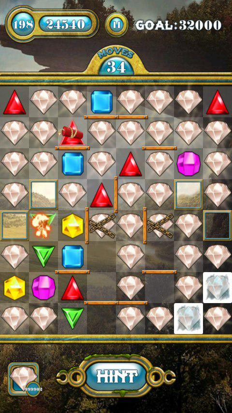

Cracking Jewels Saga for Android
The next month marks 12 years since my first crack. I feel a kind of old. It was a nice period trying to find something new everyday. Software cracking was among them. Despite I have never been skilled in cracking and all my old cracks are quite simple, I still respect reverse engineering guys very much.
Recently I've became a fan of an Android game called Jewels Saga. I didn't use any cheats and I could reach the 198th level being stuck on the 197th level. However I couldn't walk through the level for more than a week, so...
Essential requirements
-
adb(may be supplied with Android SDK, but standalone packs exist as well) -
nelenkov/android-backup-extractor— a nice tool to manageabtotarconversion and vice versa (a precompiled binary, Git commit hashfcb4ee5af3ec973a406709de889a5cf340b61ce1, can be downloaded here) -
dex2jar— a tool to convert Android format classes to Java classes format -
fesh0r/fernflower— a Java decompiler (a precompiled binary, Git commit hash77d6c2906f29492a568eedf5e553767d65350ccc, can be downloaded here) openssl-
jq1.4 or higher — a JSON processor
Extra requirements
The following requirements are necessary to build nelenkov/android-backup-extractor and fesh0r/fernflower:
- JDK 1.6+
-
gradle— a build tool to buildnelenkov/android-backup-extractor -
ant— a build tool to buildfesh0r/fernlower
The process
Building nelenkov/android-backup-extractor
First, we need to build nelenkov/android-backup-extractor.
This tool is a simple ab to tar and vice versa manager since Android backups are not simple tars.
git clone https://github.com/nelenkov/android-backup-extractor.git
&& cd android-backup-extractor
&& ./gradlew
The result JAR file will be located at ./build/libs/abe-all.jar if the build is successful.
Building fesh0r/fernflower:
The overall build process for this tool is really straight forward as well:
git clone https://github.com/fesh0r/fernflower.git
&& cd fernflower
&& ant
Preparing the game backup
- Backup the application using
adb:
adb backup -f com.smilerlee.jewels.ab -apk com.smilerlee.jewels
- Convert the
abtotarusingnelenkov/android-backup-extractor:
java -jar abe-all.jar unpack com.smilerlee.jewels.ab com.smilerlee.jewels.ab.tar
- Since Android backups are really file order sensitive, we have to generate an exact files order list in order to guarantee expected order while repacking:
tar -tf com.smilerlee.jewels.ab.tar > com.smilerlee.jewels.ab.tar.lst
Analyzing the game
- Extract the game application APK:
tar -xvf com.smilerlee.jewels.ab.tar apps/com.smilerlee.jewels/a/base.apk \
&& mv apps/com.smilerlee.jewels/a/base.apk . \
&& rm -rf apps
- Extract the classes
dexfile:
unzip -p base.apk classes.dex > classes.dex
- Convert the
dexfile to a regularjarusingdex2jar:
sh d2j-dex2jar.sh classes.dex
Decompile the jar and save the decompiled Java source code using fernflower:
mkdir -p out \
&& java -jar fernflower.jar classes-dex2jar.jar out \
&& mv out/classes-dex2jar.jar classes-dex2jar.jar.src.zip \
&& rm -rf out
The game classes are not obfuscated and can be easily read by a human.
Jewels Saga uses Android shared preferences facility to store the game state (unlocked levels, bonuses, etc).
However, the state is encrypted and stored in apps/com.smilerlee.jewels/sp/save.xml and its /map/string[@name="state"]/text() node respectively.
- Unpack the source code:
unzip classes-dex2jar.jar.src.zip -d classes-dex2jar.jar.src
And here is how the strings are encrypted and decrypted in the game (see classes-dex2jar.jar.src/com/smilerlee/jewels/states/JewelsState.java):
private static Key key = new SecretKeySpec(Codecs.fromHex("4cb04fa74c7c07e9"), "DES");
private static String encrypt(String paramString) throws Exception { Cipher localCipher = Cipher.getInstance("DES"); localCipher.init(1, key); return Codecs.toHex(localCipher.doFinal(Codecs.getBytes(paramString))); } private static String decrypt(String paramString) throws Exception { Cipher localCipher = Cipher.getInstance("DES"); localCipher.init(2, key); return Codecs.newString(localCipher.doFinal(Codecs.fromHex(paramString))); }
As you can see, a simple DES is used and 4cb04fa74c7c07e9 is the encryption key.
Other Codecs.* methods are really self-descriptive.
1 and 2 are Cipher.ENCRYPT_MODE and Cipher.DECRYPT_MODE respectively.
These constants were inlined during compilation so jd couldn't resolve them.
Preparing the game state
- Extract the saved state:
tar -xvf com.smilerlee.jewels.ab.tar apps/com.smilerlee.jewels/sp/save.xml \ && mv apps/com.smilerlee.jewels/sp/save.xml . \ && rm -rf apps \ && xmlstarlet sel -t -v '/map/string[@name="state"]/text()' save.xml > save.xml.state.base16.bin \ && xxd -r -p save.xml.state.base16.bin save.xml.state.bin
- Decrypt the saved state:
openssl enc -d -des-ecb -K 4cb04fa74c7c07e9 -in save.xml.state.bin -out save.xml.state.bin.OPEN
Note that Java DES is des-ecb in openssl (whilst the latter uses des in CBC mode) since Java DES is in ECB mode and specifying just -des in openssl will not decrypt the file.
- Now Mark the 197th level walked-through and enable the 198th level, disable ads using
jq:
Patching
(jq -c '.unlocked['$(jq -c '.unlocked | index(0)' save.xml.state.bin.OPEN)']=1 | .hyperCount=999999 | .adFree=true' save.xml.state.bin.OPEN | tr -d '\n') > PATCHED.save.xml.state.bin.OPEN
where
-
unlocked— an array of levels that are locked (0) or unlocked (1); -
hyperCount— number of extra diamonds (can't make it 1000000 becausejqconverts it to1e+6that does not work in Jewels Saga resetting the game state completely); -
adFree— no ads, but this should not be modified letting the game developers earn some ads money.
Repacking
- Encrypt the patched file:
openssl enc -e -des-ecb -K 4cb04fa74c7c07e9 -in PATCHED.save.xml.state.bin.OPEN -out PATCHED.save.xml.state.bin
- Save the patched state:
(xxd -p PATCHED.save.xml.state.bin | tr -d '\n') > PATCHED.save.xml.state.base16.bin \ && cp save.xml PATCHED.save.xml \ && xmlstarlet edit -L -u '/map/string[@name="state"]/text()' -v $(cat PATCHED.save.xml.state.base16.bin) PATCHED.save.xml \ && mkdir -p apps/com.smilerlee.jewels/sp \ && tar -xvf com.smilerlee.jewels.ab.tar \ && cp PATCHED.save.xml apps/com.smilerlee.jewels/sp/save.xml \ && tar -cvf PATCHED.com.smilerlee.jewels.ab.tar -T com.smilerlee.jewels.ab.tar.lst \ && rm -rf apps
Note that we use tr in order to remove the trailing newline because jq produces a new line.
- Convert the
tarback to theabformat:
java -jar abe-all.jar pack PATCHED.com.smilerlee.jewels.ab.tar PATCHED.com.smilerlee.jewels.ab
- Restore the patched backup:
adb restore PATCHED.com.smilerlee.jewels.ab
Done
Today I have walked through all 275 levels with 3 starts for each level. Yes, that's cheating, but I won't spend much time for the game anymore. And the final screenshot:
